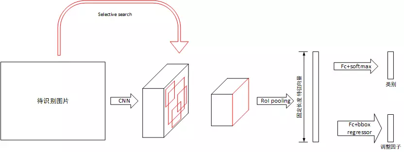
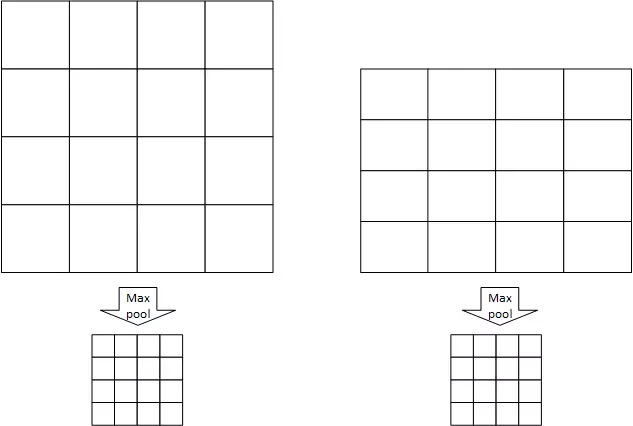

Fast R-CNN是在R-CNN的基础上进行的改进，大致框架是一致的。总体而言，Fast R-CNN相对于R-CNN而言，提出了三个改进策略:
背景
经典的R-CNN存在以下几个问题：
训练分多步骤（先在分类数据集上预训练，再进行fine-tune训练，然后再针对每个类别都训练一个线性SVM分类器，最后再用regressors对bounding box进行回归，并且bounding box还需要通过selective search生成）
时间和空间开销大（在训练SVM和回归的时候需要用网络训练的特征作为输入，特征保存在磁盘上再读入的时间开销较大）
测试比较慢（每张图片的每个region proposal都要做卷积，重复操作太多）
在Fast RCNN之前提出过SPPnet来解决R-CNN中重复卷积问题，但SPPnet仍然存在与R-CNN类似的缺陷：
训练分多步骤（需要SVM分类器，额外的regressors）
空间开销大
因此，该文提出的Fast RCNN便是解决上述不足，在保证效果的同时提高效率。基于VGG16的Fast RCNN模型在训练速度上比R-CNN快大约9倍，比SPPnet快大约3倍；测试速度比R-CNN快大约213倍，比SPPnet快大约10倍，在VOC2012数据集上的mAP大约为66%。
系统架构

由于RCNN存在流水线过长，检测速度慢的问题，Fast-RCNN几乎将整个过程置于深度学习的框架下，因此带来了准确率和速度的提升，该系统主要组成部分如上图所示，有：
CNN特征提取器：与RCNN不同，该网络的输入为整张图片，输出为特征张量
候选框提取：与RCNN相同使用Selective Search提取候选框，只是候选框通过大小变换后作用于CNN提取出的特征张量中，而不直接作用于图片
RoI Pooling层：该层次用于将不同大小的候选框归一化到同一个大小上，然后通过全连接层计算出固定长度的特征向量
分类器：根据特征向量对物品进行分类，列表包括物品类别和背景
回归器：根据特征向量微调候选框位置和大小，最终生成针对候选框的调整因子
该系统对于待识别图片，首先将其使用Selective Search处理获得一系列候选框，随后将其归一化到固定大小，送入CNN网络中提取特征。对于提取出的特征张量，假设其保留了原图片的空间位置信息，将候选框做对应变换后映射到特征张量上，提取出大小不同的候选区域的特征张量。对于每个候选区域的特征张量，使用RoI pooling层将其大小归一化，随后使用全连接层提取固定长度的特征向量。对于该特征向量，分别使用全连接层+softmax和全连接层+回归判断类别并计算原候选框的调整因子。
候选框提取
候选框的提取与RCNN相同，使用Selective Search算法，该算法会提供一系列候选区域框，而不是遍历各种大小的子图，所以速度快于滑动框，Selective Search的具体说明参看RCNN笔记。需要指出的是，该部分是整个网络的速度瓶颈。
CNN特征提取
网络的基本结构是VGG-16网络，相对于原网络，做了以下调整：
最后一个最大值池化层用RoI池化层代替，该池化层可将不同大小的输入池化为统一大小输出。
最后一层全连接层使用两个分裂的全连接层代替，一个用于计算分类，一个用于计算候选框的调整因子
输入改为两个，分别为原图和Selective Search产生的候选框坐标
RoI池化层
RoI池化层用于将不同大小的输入张量池化为固定大小，RoI池化层指定池化窗口的数量为W \times H，每个池化窗口的大小是根据池化区域变化的，例如一张图片的尺寸为w \times h，则每个窗口的大小为\frac{w}{W} \times \frac{h}{H}，假设W=4，H=4，有以下例子：

如图左右各有一个大小不同的RoI区域，划分为W \times H个池化窗口，每个池化窗口的大小因原RoI区域尺寸不同而不同，经过RoI池化尺寸变为相同的W \times H。
分类器与回归器
分类器和回归器的输入为RoI池化输出的固定大小向量经过两层全连接层后产生的特征向量，分类器用于判断物品属于哪一类（类别+背景），回归器用于计算4个调整因子，调整因子部分内容见RCNN笔记。
模型训练
模型的训练过程与RCNN不同，Fast-RCNN将分类器和回归器的训练统一到深度学习的框架下，在Selective Search提取出候选区域RoI后，所有的训练均在深度学习框架下进行。
批处理
训练使用SGD算法，因此需要提取batch进行训练。batch的提取基于N张图片，每个batch提取\cfrac{R}{N}个区域，每个batch共R个数据。当N较小时，这种提取方法充分的使用了数据局部性，能提高训练速度。在本论文中，有R=128，N=2，即每个batch的数据来自两张图片，共128个RoI数据，其中要求25%的RoI为包含物体的（IoU>0.5）,这些RoI被标记为对应类别，剩下的75%的RoI要求IoU在0.1~0.5之间，标记为背景。
多任务代价函数
该网络的输入有两个：
分类结果p=(p_0,p1,…,p_K)，共K+1个类别，包括K个物品和背景
调整因子t_k=(t_x^k,t_y^k,t_w^k,t_h^k)，调整的方式与RCNN相同
因此，代价函数必须考虑以上两种输出的代价，最终代价函数如下所示：
L(p,u.t_u,v) = L_{cls}(p,u) + \lambda[u \geq 1]L_{loc}(t^u,v)
第一个部分L_{cls}为分类部分的代价函数，使用交叉熵函数，公式如下，其中u为该RoI区域的标记类别，p为神经网络输出的分类向量：
L_{cls}(p,u) = -log(p_u)
第二个部分L_{loc}为调整因子的代价函数，[u \geq 1]表示仅当当前位置不是背景时才考虑该部分代价， 超参数\lambda表示两个部分之间的权重，论文中取1。L_{loc}如下所示，其中t为网络输出的调整因子，v为目标调整因子。
1 | $$ |
训练过程
由上，可以归纳Fast_RCNN的训练过程：
获取预训练模型
取N=2张图片前向传播，按批处理部分所述进行前向传播，并计算代价函数
根据代价函数反向传播更新权值跳转到2
其中，RoI pooling层的反向传播与Pool层相同，详情见CNN的反向传播，不同RoI的反向传播结果对应位置相加后再反向传播到前一层。为了达成尺寸不变性，还在训练中使用了图像金字塔和数据增强的方法。